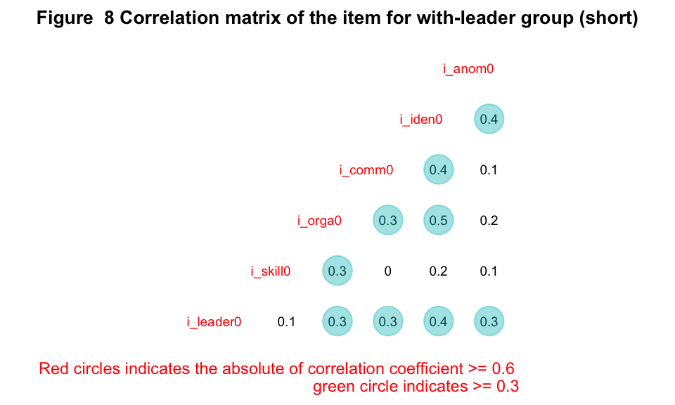

Untitled
Data Wrangling
For the interest of space, codes in this section will not be shown. Yet they are available in the .rmd file.
Read in the data
The data were collected across years 2022 (CARE panel, n=218) and 2023 (Students joining an avalanche course, n =59).
Combine 2022 and 2023 data
They were combined into one data set (n = 277). An index variable was generated as the unique identifier for each case.
Reomove cases
Remove careless responses (according to attention trap)
Q10_2 and Q10_5, as well as Q19_1 and Q19_4 were same questions with different wordings. If the responses had conflictory results between them, they would be regarded as careless responses and hence deleted (n = 24).
Remove cases who did not consent
Respondents who did not consent to participate were removed from the data (n = 4).
Remove cases with NA for if having a leader
Respondents who did not disclose if the ski group had a leader were removed from the data (n = 27).
Replace value of -99 with NA
-99 was used to label seen but unanswered questions. They were relabeled as NA.
Unify value labels
Values of some of the variables had been inconsistently labeled by Qualtrics. They were unified here.
Relabel variables
Properly label the variables so that the interpretation can be better managed. For the label, see Table 1.
Unify the direction of item wording
Four items of the SOCIAL were worded in negative direction (e.g. XXXX). Basic factor analysis attempts to identify latent variance through exploring the co-variance in measured variables. As such, the direction of the item wording (positive vs negative) does not influence the analysis. However, we still unify the results into same wording direction (positive) for the interest of easy interpretation.
Generate Norwegian variable labels
The survey was carried out in Norwegian and the initial language of text is Norwegian. Norwegian labels were created here.
Create data sets for analysis
Four data sets were created. They are a. 18 item with leader; b. 6 item with leader; c. 17 item without leader; d. 5 item without leader; 3. background. The case identifier is “index” variable across data sets.
Create with-leader and without-leader data-sets
Before generating 4 data sets, the data were first separated according to with (n = 104) or with-out leader (n = 118).
Remove cases with 50% NAs across major questions for each data sets
Within in each data set (with/without leader), cases with 50% NAs were removed from data. Three cases (#213,253,276) were removed from with-leader group; Four cases (#94, 252, 258, 275) were removed from without-leader group.
Create data set: 17 item without leader
Without-leader group respondents answered 22 out of 26 questions in the survey (the remaining 4 questions were about leader). Within the 22 questions, 17 were adapted from Zeiweiful’s long version, 5 were from short version. They were further split into two data sets. They were subsequently referred to as without-leader long and without-leader short, respectively. The sample size is 114. According the publications, the minimum sample size for an exploratory factor analysis should be 5 × (number of items). In our case, the without-leader group’s long version analysis involves 17 items, indicating at least 17×5=85 samples. Our sample size meets this requirement.
Create data set: 5 item without leader
According the publications, the minimum sample size for an exploratory factor analysis should be 5 × (number of items). In our case, the without-leader group’s long version analysis involves 5 items, indicating at least 5×5=25 samples. Our sample size meets this requirement.
Create data set: 20 item with leader
Without-leader group respondents answered all 26 questions in the survey. Among the questions, 20 were adapted from Zeiweiful’s long version, 6 were from short version. They were further split into two data sets. They were subsequently referred to as with-leader long and with-leader short, respectively. The sample size is 101. According the publications, the minimum sample size for an exploratory factor analysis should be 5 × (number of items). In our case, the without-leader group’s long version analysis involves 20 items, indicating at least 20×5=100 samples. Our sample size meets this requirement.
Create data set: 6 item with leader
According the publications, the minimum sample size for an exploratory factor analysis should be 5 × (number of items). In our case, the without-leader group’s long version analysis involves 5 items, indicating at least 6×5=30 samples. Our sample size meets this requirement.
Check and impute NAs and IDNs
Discritpive statistics with number of NAs and IDNs for each item
| var | Question | n* | n of IDN† | n of NA | Mean | Median | SD | Q1~Q3 |
|---|---|---|---|---|---|---|---|---|
| i_leader2 | The leader (formal or informal) communicated openly and clearly | 100 | 2 | 1 | 4.3 | 4.0 | 0.8 | 4.0 ~ 5.0 |
| i_leader3 | Everyone could voice their concerns to the leader (formal or informal) | 100 | 3 | 1 | 4.6 | 5.0 | 0.7 | 4.0 ~ 5.0 |
| i_skill1 | The least knowledgeable group member could conduct satisfactory avalanche assessments for this trip | 101 | 1 | 0 | 3.2 | 4.0 | 1.3 | 2.0 ~ 4.0 |
| i_skill2 | There was no large gap in avalanche assessment skills between the group members | 101 | 2 | 0 | 2.5 | 2.0 | 1.3 | 1.0 ~ 4.0 |
| i_skill3 | There was no important difference in skiing skill level between group members, given the terrain | 101 | 1 | 0 | 2.9 | 3.0 | 1.4 | 2.0 ~ 4.0 |
| i_skill4 | All group members were equipped with standard avalanche safety equipment (beacon, shovel, probe) and trained in the use of it | 101 | 2 | 0 | 4.3 | 5.0 | 1.1 | 4.0 ~ 5.0 |
| i_orga1 | The group members knew each other well | 101 | 0 | 0 | 3.8 | 4.0 | 1.2 | 3.0 ~ 5.0 |
| i_orga2 | The group size was appropriate for the trip (time, difficulty) | 100 | 1 | 1 | 4.5 | 5.0 | 0.8 | 4.0 ~ 5.0 |
| i_orga3 | The roles of the group members were clearly defined | 101 | 1 | 0 | 3.2 | 3.0 | 1.2 | 2.0 ~ 4.0 |
| i_comm1 | Decisions concerning avalanche hazard were well discussed in the group | 101 | 1 | 0 | 4.1 | 4.0 | 0.9 | 4.0 ~ 5.0 |
| i_comm2 | Everyone in the group understood the decisions that were made | 101 | 4 | 0 | 4.1 | 4.0 | 1.0 | 4.0 ~ 5.0 |
| i_comm3 | Everyone voiced their concerns whenever they felt necessary | 101 | 5 | 0 | 4.0 | 4.0 | 1.1 | 3.0 ~ 5.0 |
| i_iden1 | There were clear expectations of each group member | 101 | 1 | 0 | 3.4 | 3.0 | 1.0 | 3.0 ~ 4.0 |
| i_iden2 | A reasonable alternative trip existed in case of disagreements | 101 | 1 | 0 | 3.8 | 4.0 | 1.2 | 3.0 ~ 5.0 |
| i_iden3 | Everyone was happy with the decisions that were made | 101 | 4 | 0 | 4.3 | 4.0 | 1.0 | 4.0 ~ 5.0 |
| i_anom1 | The group decisions at the decision points were unanimous | 100 | 3 | 1 | 4.0 | 4.0 | 1.1 | 4.0 ~ 5.0 |
| i_anom2 | Someone tried to impress others. | 101 | 1 | 0 | 4.1 | 4.0 | 1.0 | 4.0 ~ 5.0 |
| i_anom3 | Love stories were going on in the group | 101 | 6 | 0 | 4.1 | 5.0 | 1.4 | 3.0 ~ 5.0 |
| i_anom4 | The presence of other groups impacted my group’s decision making | 101 | 2 | 0 | 4.1 | 5.0 | 1.2 | 3.0 ~ 5.0 |
| * number of cases minus number of NA | ||||||||
| † IDN: Don't know |
| var | Question | n* | n of IDN† | n of NA | Mean | Median | SD | Q1~Q3 |
|---|---|---|---|---|---|---|---|---|
| i_skill2 | There was no large gap in avalanche assessment skills between the group members | 114 | 0 | 0 | 3.2 | 3.0 | 1.3 | 2.0 ~ 4.0 |
| i_skill3 | There was no important difference in skiing skill level between group members, given the terrain | 114 | 0 | 0 | 3.6 | 4.0 | 1.3 | 2.0 ~ 5.0 |
| i_skill4 | All group members were equipped with standard avalanche safety equipment (beacon, shovel, probe) and trained in the use of it | 114 | 1 | 0 | 4.5 | 5.0 | 1.0 | 4.0 ~ 5.0 |
| i_orga1 | The group members knew each other well | 113 | 0 | 1 | 4.2 | 5.0 | 1.0 | 4.0 ~ 5.0 |
| i_orga2 | The group size was appropriate for the trip (time, difficulty) | 113 | 1 | 1 | 4.6 | 5.0 | 0.8 | 4.0 ~ 5.0 |
| i_orga3 | The roles of the group members were clearly defined | 113 | 5 | 1 | 3.2 | 3.0 | 1.4 | 2.0 ~ 5.0 |
| i_comm1 | Decisions concerning avalanche hazard were well discussed in the group | 114 | 0 | 0 | 4.0 | 4.0 | 1.0 | 4.0 ~ 5.0 |
| i_comm2 | Everyone in the group understood the decisions that were made | 114 | 1 | 0 | 4.3 | 5.0 | 0.9 | 4.0 ~ 5.0 |
| i_comm3 | Everyone voiced their concerns whenever they felt necessary | 114 | 6 | 0 | 4.3 | 4.0 | 1.0 | 4.0 ~ 5.0 |
| i_iden1 | There were clear expectations of each group member | 114 | 0 | 0 | 3.6 | 4.0 | 1.0 | 3.0 ~ 4.0 |
| i_iden2 | A reasonable alternative trip existed in case of disagreements | 114 | 1 | 0 | 3.9 | 4.0 | 1.1 | 3.0 ~ 5.0 |
| i_iden3 | Everyone was happy with the decisions that were made | 114 | 1 | 0 | 4.4 | 5.0 | 0.8 | 4.0 ~ 5.0 |
| i_anom1 | The group decisions at the decision points were unanimous | 114 | 7 | 0 | 4.2 | 4.0 | 1.1 | 4.0 ~ 5.0 |
| i_anom2 | Someone tried to impress others. | 114 | 2 | 0 | 4.2 | 4.0 | 1.1 | 4.0 ~ 5.0 |
| i_anom3 | Love stories were going on in the group | 114 | 2 | 0 | 4.3 | 5.0 | 1.2 | 4.0 ~ 5.0 |
| i_anom4 | The presence of other groups impacted my group’s decision making | 114 | 1 | 0 | 3.8 | 4.0 | 1.4 | 2.0 ~ 5.0 |
| * number of cases minus number of NA | ||||||||
| † IDN: Don't know |
| var | Question | n* | n of IDN† | n of NA | Mean | Median | SD | Q1~Q3 |
|---|---|---|---|---|---|---|---|---|
| i_skill0 | The level of avalanche assessment and rescue skills differed greatly across the group. | 101 | 2 | 0 | 2.7 | 2.0 | 1.4 | 2.0 ~ 4.0 |
| i_orga0 | The group was well-set up and organized for this trip | 101 | 0 | 0 | 3.9 | 4.0 | 0.9 | 3.0 ~ 4.0 |
| i_comm0 | The communication in the group was good | 101 | 1 | 0 | 4.4 | 4.0 | 0.7 | 4.0 ~ 5.0 |
| i_iden0 | The group was cohesive and had a shared vision | 100 | 1 | 1 | 4.2 | 4.0 | 0.8 | 4.0 ~ 5.0 |
| i_anom0 | Social interactions in the group negatively impacted decision | 101 | 3 | 0 | 4.4 | 5.0 | 1.0 | 4.0 ~ 5.0 |
| * number of cases minus number of NA | ||||||||
| † IDN: Don't know |
| var | Question | n* | n of IDN† | n of NA | Mean | Median | SD | Q1~Q3 |
|---|---|---|---|---|---|---|---|---|
| i_orga0 | The group was well-set up and organized for this trip | 114 | 0 | 0 | 4.1 | 4.0 | 0.9 | 4.0 ~ 5.0 |
| i_comm0 | The communication in the group was good | 114 | 0 | 0 | 4.3 | 5.0 | 1.0 | 4.0 ~ 5.0 |
| i_iden0 | The group was cohesive and had a shared vision | 114 | 0 | 0 | 4.2 | 4.0 | 0.8 | 4.0 ~ 5.0 |
| i_anom0 | Social interactions in the group negatively impacted decision | 113 | 3 | 1 | 4.3 | 5.0 | 1.0 | 4.0 ~ 5.0 |
| * number of cases minus number of NA | ||||||||
| † IDN: Don't know |
Adress NA and IDN casewise
The number of NAs and IDNs were few in number comparing with the sample size for each data set. Hence, the NAs and IDNs were checked case-wise, and decisions for each case were made accordingly. Please go to file “NA_and_IDN.md” for full description. A quck summary here: case #82 (in without group) were removed due to high proportion of IDNs, while other cases with NAs/IDNs does not show much logical issue. These NAs/IDNs will be imputed by within-subgroup median.
Sumarize data clensing
The full processes of data cleansing were summarized in the following flowchart.

Visualization
Distribution
Since the data were collected from Likert scale, which usually skewed towards an end, I do not seek normality from these graphs. Instead, I scanned through the distributions to get a sense of the features of each item, such as left skewness (e.g. i_anom3), right skewness (e.g. i_skill4), kurtosis (e.g. i_orga3), polarization (e.g. i_skill3). These also shed light on skiers’ overall performance pattern across sub-groups. To illustrate, it could be interesting to find that the organization of without-leader group wasn’t rated notably lower than that of with-leader group. However, the skills were rated higher in without-leader group. This indicates people who ski without a leader are more confident in his and his teammates skiing/avalanche-forecasting skills. Of course, I hope for a normal distribution from the factor scores obtained by the following factor analysis.
Correlation matrix
Correlation matrix was created for each of the four scales (2 long and 2 short). Pearson correlation coefficients were reported. Any coefficients ≥ 0.3 were highlighted in green circle; any coefficients ≥ 0.3 were highlighted in read circle.
There are several well-recognized criteria for checking factorability, including correlation matrix, KMO test, and Bartlett sphericity test. Here I checked the correlation. Other criteria were checked in the following section. We hope that the majority of the items have a correlation coefficient ≥ 0.3 with at least one other item, which suggest good factorability.
For with-leader group (long), it was observed that 18 of the 20 items correlated at least .3 with at least one other item, suggesting reasonable factorability. See figure 6.
For without-leader group (long), it was observed that 16 of the 17 items correlated at least .3 with at least one other item, suggesting reasonable factorability. See figure 7.
For with-leader group (short), it was observed that 6 of the 6 items correlated at least .3 with at least one other item, suggesting reasonable factorability. See figure 8.

For without-leader group (short), it was observed that 6 of the 6 items correlated at least .3 with at least one other item, suggesting reasonable factorability. See figure 9.
Factor analysis for with-leader group (long)
Check factoribility
Results of KMO test of sampling adequacy for with-leader group (long)
| KMO | |
|---|---|
| i_leader1 | 0.633 |
| i_leader2 | 0.707 |
| i_leader3 | 0.751 |
| i_skill1 | 0.661 |
| i_skill2 | 0.697 |
| i_skill3 | 0.730 |
| i_skill4 | 0.762 |
| i_orga1 | 0.580 |
| i_orga2 | 0.521 |
| i_orga3 | 0.533 |
| i_comm1 | 0.807 |
| i_comm2 | 0.722 |
| i_comm3 | 0.809 |
| i_iden1 | 0.632 |
| i_iden2 | 0.608 |
| i_iden3 | 0.706 |
| i_anom1 | 0.732 |
| i_anom2 | 0.810 |
| i_anom3 | 0.364 |
| i_anom4 | 0.546 |
| Overall | 0.687 |
| KMO | |
|---|---|
| i_leader1 | 0.622 |
| i_leader2 | 0.720 |
| i_leader3 | 0.787 |
| i_skill1 | 0.659 |
| i_skill2 | 0.735 |
| i_skill3 | 0.750 |
| i_skill4 | 0.769 |
| i_orga1 | 0.635 |
| i_orga2 | 0.540 |
| i_orga3 | 0.520 |
| i_comm1 | 0.811 |
| i_comm2 | 0.786 |
| i_comm3 | 0.806 |
| i_iden1 | 0.633 |
| i_iden2 | 0.643 |
| i_iden3 | 0.719 |
| i_anom1 | 0.716 |
| i_anom2 | 0.832 |
| Overall | 0.713 |
| Chi-square | p-value | DF |
|---|---|---|
| 518.942 | <0.001 | 190 |
Explore number of factors
Parallel analysis suggests that the number of factors = 3 and the number of components = NA
Number of factors
Call: vss(x = x, n = n, rotate = rotate, diagonal = diagonal, fm = fm,
n.obs = n.obs, plot = FALSE, title = title, use = use, cor = cor)
VSS complexity 1 achieves a maximimum of 0.49 with 1 factors
VSS complexity 2 achieves a maximimum of 0.63 with 3 factors
The Velicer MAP achieves a minimum of 0.02 with 2 factors
Empirical BIC achieves a minimum of -449.58 with 2 factors
Sample Size adjusted BIC achieves a minimum of -38.79 with 5 factors
Statistics by number of factors
vss1 vss2 map dof chisq prob sqresid fit RMSEA BIC SABIC complex
1 0.49 0.00 0.022 170 302 1.8e-09 18.5 0.49 0.088 -481 56 1.0
2 0.43 0.61 0.020 151 200 4.9e-03 14.1 0.61 0.056 -496 -19 1.4
3 0.41 0.63 0.022 133 159 6.0e-02 11.7 0.68 0.043 -453 -33 1.7
4 0.39 0.59 0.026 116 136 1.0e-01 10.6 0.71 0.040 -398 -32 2.0
5 0.38 0.58 0.030 100 106 3.2e-01 9.4 0.74 0.022 -355 -39 2.1
eChisq SRMR eCRMS eBIC
1 464 0.111 0.117 -319
2 246 0.080 0.090 -450
3 164 0.066 0.078 -449
4 137 0.060 0.077 -397
5 106 0.053 0.073 -355Explore factor solutions
Explore 5-factor solution
| Item | ML2 | ML4 | ML3 | ML5 | ML1 |
|---|---|---|---|---|---|
| i_leader1 | -0.448 | 0.407 | |||
| i_leader2 | 0.747 | ||||
| i_leader3 | 0.556 | ||||
| i_skill1 | 0.88 | ||||
| i_skill2 | 0.665 | ||||
| i_skill3 | 0.327 | 0.321 | |||
| i_skill4 | 0.333 | ||||
| i_orga1 | 0.527 | ||||
| i_orga2 | |||||
| i_orga3 | 0.368 | ||||
| i_comm1 | 0.511 | ||||
| i_comm2 | 0.385 | 0.303 | 0.833 | ||
| i_comm3 | 0.649 | ||||
| i_iden1 | |||||
| i_iden2 | |||||
| i_iden3 | 0.549 | ||||
| i_anom1 | 0.704 | ||||
| i_anom2 | 0.413 | 0.323 | |||
| i_anom3 | 0.345 | ||||
| i_anom4 |
Explore 4-factor solution
| Item | ML1 | ML3 | ML2 | ML4 |
|---|---|---|---|---|
| i_leader1 | -0.4 | 0.42 | 0.334 | |
| i_leader2 | 0.768 | |||
| i_leader3 | 0.598 | |||
| i_skill1 | 0.93 | |||
| i_skill2 | 0.653 | |||
| i_skill3 | 0.348 | |||
| i_skill4 | 0.338 | |||
| i_orga1 | 0.542 | |||
| i_orga2 | ||||
| i_orga3 | 0.389 | |||
| i_comm1 | 0.5 | |||
| i_comm2 | 0.363 | 0.382 | 0.374 | |
| i_comm3 | 0.616 | |||
| i_iden1 | ||||
| i_iden2 | ||||
| i_iden3 | 0.342 | 0.656 | ||
| i_anom1 | 0.627 | |||
| i_anom2 | 0.41 | 0.303 | ||
| i_anom3 | ||||
| i_anom4 |
Explore 3-factor solution
| Item | ML1 | ML3 | ML2 |
|---|---|---|---|
| i_leader1 | 0.615 | ||
| i_leader2 | 0.689 | ||
| i_leader3 | 0.556 | 0.322 | |
| i_skill1 | 0.929 | ||
| i_skill2 | 0.638 | ||
| i_skill3 | 0.369 | ||
| i_skill4 | 0.392 | ||
| i_orga1 | 0.518 | ||
| i_orga2 | 0.301 | ||
| i_orga3 | 0.445 | ||
| i_comm1 | 0.358 | 0.384 | |
| i_comm2 | 0.403 | 0.471 | 0.31 |
| i_comm3 | 0.494 | ||
| i_iden1 | 0.378 | ||
| i_iden2 | |||
| i_iden3 | 0.484 | 0.37 | |
| i_anom1 | 0.435 | ||
| i_anom2 | 0.398 | 0.387 | |
| i_anom3 | |||
| i_anom4 |
Finetune 3-factor solution
| Item | ML2 | ML1 | ML3 |
|---|---|---|---|
| i_leader1 | 0.614 | -0.356 | |
| i_leader2 | 0.613 | ||
| i_leader3 | 0.344 | 0.589 | |
| i_skill1 | 0.925 | ||
| i_skill2 | 0.651 | ||
| i_skill4 | 0.355 | ||
| i_orga1 | 0.598 | ||
| i_comm3 | 0.596 | ||
| i_iden2 | 0.332 | ||
| i_iden3 | 0.46 | 0.388 | |
| i_anom1 | 0.515 | ||
| i_anom2 | 0.414 | 0.402 |
Explore 2-factor solution
| Item | ML2 | ML1 |
|---|---|---|
| i_leader1 | 0.528 | |
| i_leader2 | 0.385 | |
| i_leader3 | 0.581 | |
| i_skill1 | 0.957 | |
| i_skill2 | 0.635 | |
| i_skill3 | 0.416 | |
| i_skill4 | 0.374 | |
| i_orga1 | ||
| i_orga2 | 0.322 | |
| i_orga3 | 0.397 | |
| i_comm1 | 0.348 | |
| i_comm2 | 0.467 | 0.509 |
| i_comm3 | 0.47 | |
| i_iden1 | 0.324 | |
| i_iden2 | 0.313 | |
| i_iden3 | 0.591 | |
| i_anom1 | 0.477 | 0.318 |
| i_anom2 | 0.537 | |
| i_anom3 | ||
| i_anom4 |
Finetune 2-factor solution
| Item | ML2 | ML1 |
|---|---|---|
| i_leader2 | 0.361 | |
| i_leader3 | 0.755 | |
| i_skill1 | 0.898 | |
| i_skill2 | 0.671 | |
| i_skill3 | 0.37 | |
| i_orga1 | 0.312 | |
| i_comm1 | 0.332 | |
| i_comm2 | 0.559 | 0.382 |
| i_comm3 | 0.593 | |
| i_iden2 | ||
| i_anom1 | 0.386 |
Comparison between factor solutions, with-leader (long)
| CumulativeVariance | |
|---|---|
| 2-factor(tuned) | 0.329 |
| 2-factor | 0.265 |
| 3-factor(tuned) | 0.403 |
| 3-factor | 0.317 |
| 4-factor | 0.352 |
| 5-factor | 0.396 |
Check the factor connotation for 3-factor solution (fine-tuned)
| Item | |
|---|---|
| ML2: Leadership Quality | |
| i_iden2 | A reasonable alternative trip existed in case of disagreements |
| i_leader3 | Everyone could voice their concerns to the leader (formal or informal) |
| i_anom1 | The group decisions at the decision points were unanimous |
| i_leader1 | The leader (formal or informal) was the best suited person in the group to make the decisions. |
| i_leader2 | The leader (formal or informal) communicated openly and clearly |
| i_comm3 | Everyone voiced their concerns whenever they felt necessary |
| i_comm2 | Everyone in the group understood the decisions that were made |
| ML3: Planning | |
| i_orga1 | The group members knew each other well |
| i_skill1 | The least knowledgeable group member could conduct satisfactory avalanche assessments for this trip |
| ML1: Skill | |
| i_skill2 | There was no large gap in avalanche assessment skills between the group members |
| i_skill4 | All group members were equipped with standard avalanche safety equipment (beacon, shovel, probe) and trained in the use of it |
Factor analysis for with-leader group (short)
Check factoribility
| KMO | |
|---|---|
| i_leader0 | 0.808 |
| i_skill0 | 0.639 |
| i_orga0 | 0.727 |
| i_comm0 | 0.755 |
| i_iden0 | 0.700 |
| i_anom0 | 0.783 |
| Overall | 0.735 |
| Chi-square | p-value | DF |
|---|---|---|
| 94.2 | <0.001 | 15 |
Explore number of factors

Parallel analysis suggests that the number of factors = 1 and the number of components = NA
Number of factors
Call: vss(x = x, n = n, rotate = rotate, diagonal = diagonal, fm = fm,
n.obs = n.obs, plot = FALSE, title = title, use = use, cor = cor)
VSS complexity 1 achieves a maximimum of 0.69 with 2 factors
VSS complexity 2 achieves a maximimum of 0.73 with 2 factors
The Velicer MAP achieves a minimum of 0.05 with 1 factors
Empirical BIC achieves a minimum of -32.85 with 1 factors
Sample Size adjusted BIC achieves a minimum of -5.89 with 1 factors
Statistics by number of factors
vss1 vss2 map dof chisq prob sqresid fit RMSEA BIC SABIC complex eChisq
1 0.61 0.00 0.047 9 7.1e+00 0.62 3.3 0.61 0 -34 -5.9 1.0 8.6e+00
2 0.69 0.73 0.119 4 1.6e+00 0.81 2.3 0.73 0 -17 -4.2 1.1 1.8e+00
3 0.53 0.70 0.233 0 9.6e-02 NA 2.1 0.76 NA NA NA 1.4 1.2e-01
4 0.48 0.68 0.431 -3 5.0e-11 NA 1.8 0.79 NA NA NA 1.6 6.8e-11
5 0.45 0.61 1.000 -5 0.0e+00 NA 1.6 0.81 NA NA NA 1.8 5.3e-16
6 0.44 0.60 NA -6 4.8e+00 NA 2.9 0.65 NA NA NA 1.8 5.2e+00
SRMR eCRMS eBIC
1 5.4e-02 0.069 -33
2 2.5e-02 0.048 -17
3 6.3e-03 NA NA
4 1.5e-07 NA NA
5 4.2e-10 NA NA
6 4.1e-02 NA NAExplore 2-factor solution
| Item | ML2 | ML1 |
|---|---|---|
| i_leader0 | 0.485 | |
| i_skill0 | 0.993 | |
| i_orga0 | 0.566 | |
| i_comm0 | 0.504 | |
| i_iden0 | 0.855 | |
| i_anom0 | 0.421 |
fine-tune 2-factor solution
| Item | ML2 | ML1 |
|---|---|---|
| i_iden0 | 0.838 | |
| i_comm0 | 0.522 | |
| i_leader0 | 0.483 | |
| i_orga0 | 0.574 | |
| i_skill0 | 0.993 |
Explore 3-factor solution
| Item | ML1 | ML3 | ML2 |
|---|---|---|---|
| i_leader0 | 0.487 | ||
| i_skill0 | |||
| i_orga0 | 0.947 | ||
| i_comm0 | 0.869 | ||
| i_iden0 | 0.311 | 0.664 | |
| i_anom0 | 0.478 |
Factor analysis for without-leader group (short)
Check factoribility
| KMO | |
|---|---|
| i_skill0 | 0.805 |
| i_orga0 | 0.808 |
| i_comm0 | 0.799 |
| i_iden0 | 0.820 |
| i_anom0 | 0.793 |
| Overall | 0.805 |
| Chi-square | p-value | DF |
|---|---|---|
| 172.282 | <0.001 | 10 |
Explore number of factors
Parallel analysis suggests that the number of factors = 1 and the number of components = NA
Number of factors
Call: vss(x = x, n = n, rotate = rotate, diagonal = diagonal, fm = fm,
n.obs = n.obs, plot = FALSE, title = title, use = use, cor = cor)
VSS complexity 1 achieves a maximimum of 0.83 with 1 factors
VSS complexity 2 achieves a maximimum of 0.89 with 2 factors
The Velicer MAP achieves a minimum of 0.08 with 1 factors
Empirical BIC achieves a minimum of -16.67 with 1 factors
Sample Size adjusted BIC achieves a minimum of 0.44 with 2 factors
Statistics by number of factors
vss1 vss2 map dof chisq prob sqresid fit RMSEA BIC SABIC complex
1 0.83 0.00 0.076 5 1.0e+01 0.067 1.55 0.83 0.096 -13.4 2.42 1.0
2 0.66 0.89 0.188 1 2.0e+00 0.156 1.04 0.89 0.094 -2.7 0.44 1.5
3 0.46 0.79 0.389 -2 3.1e-12 NA 0.92 0.90 NA NA NA 1.9
eChisq SRMR eCRMS eBIC
1 7.0e+00 5.5e-02 0.078 -16.7
2 8.7e-01 2.0e-02 0.062 -3.9
3 1.2e-12 2.3e-08 NA NAExplore 2-factor solution
| Item | ML1 | ML2 |
|---|---|---|
| i_skill0 | 0.72 | |
| i_orga0 | 0.546 | 0.513 |
| i_comm0 | 0.691 | |
| i_iden0 | 0.53 | 0.48 |
| i_anom0 | 0.721 |
s ### Explore 3-factor solution
| Item | ML2 | ML3 | ML1 |
|---|---|---|---|
| i_skill0 | 0.637 | ||
| i_orga0 | 0.551 | 0.301 | 0.448 |
| i_comm0 | 0.444 | 0.594 | |
| i_iden0 | 0.574 | 0.479 | |
| i_anom0 | 0.702 | 0.307 |